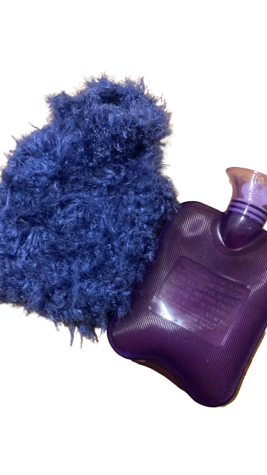

Crafting is a very big hobby of mine. You'd usually find me in the evenings chilling on a sofa with a mug of peppermint tea and getting into my current crafting project. I can crochet, knit, sew, and I can make macrame. At the moment, I'm learning how to make more wearable items (including a jumper!).
I've always enjoyed crafting, and from a young age I learnt how to knit from my grandmother. It's something I'm proud to be able to do, as a skill!
Take a look at a recently completed project here!
I'm a hot sauce fiend. Put it on just about everything. I grow my own chillies every year and make a small hot sauce with chillies, carrots, garlic and other ingredients on the hob. I love to grow items, and then if I can cook with them - even better!
In the past I have grown cucumbers, chillies, tomatoes, and avocados! Well not actually avocados, just the plant for now. It can take up to 10 years to get avocados from their plants.. So I have some waiting to do. Same thing with my lemon plant, I'm in it for the long game!
I also spend a large amount of time cooking, every type of cuisine too! My favourite meal to cook is a probably a vegetarian lasagna or a mushroom ramen with tenderstem broccoli. We love to follow Ottolenghi's recipes - our fave is actually his mushroom lasanga. It genuinely takes 3+ hours, but sooo worth it! I also recently got into making my own pasta, which just tops everything off as a fab meal!
I recently joined East Finchley Women's Football Club. We train every Wednesday, come rain or shine. It's a one hour session led by a coach, where we do 30 mins of practice drills followed by a 30 minute game. Depending on the number of people in attendance, it's usually 5 or 7 a side.
When I first started I thought that I was a defender, as this is what I played when I was younger. However, I think I prefer to be a midfielder. I enjoy the stretches on running, and having oversight on the whole game by being support for both forward people and defenders.
I have a lot to learn, but it's been really fun so far getting to know people in the area, and learning more about a sport I didn't think I would play again. I love the team aspect of it too! If you wanted to find out more, visit their website here.
Plants are love, plants are life! I'm not the best plant mum in the world, but I try to take care of the ones I've got. My plants range from small (cactus) all the way up to a Swiss Cheese plant that takes up most of the front room space!
I've made a great webpage all about indoor plant care. Have a look here for helpful hints and tips!
I'm a reader! I spent some time after university reading books that I thought I should be - to educate myself, and understand more about the world. Although it made great conversation, I fell out of love with reading and started to dwindle on the number of pages I was reading at the time.
During covid I wanted to read all the Harry Potter books for the first time ever. It completely changed my perspective on reading and I stopped picking books based off what I thought other people wanted me to read, and started reading what I enjoyed. Since then I've been greatly engrossed in many books! You can see my GoodReads page here.